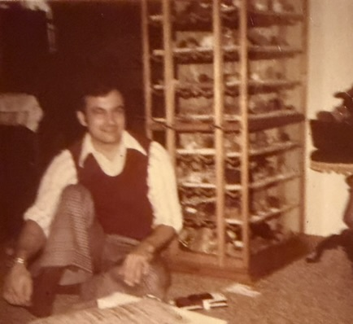
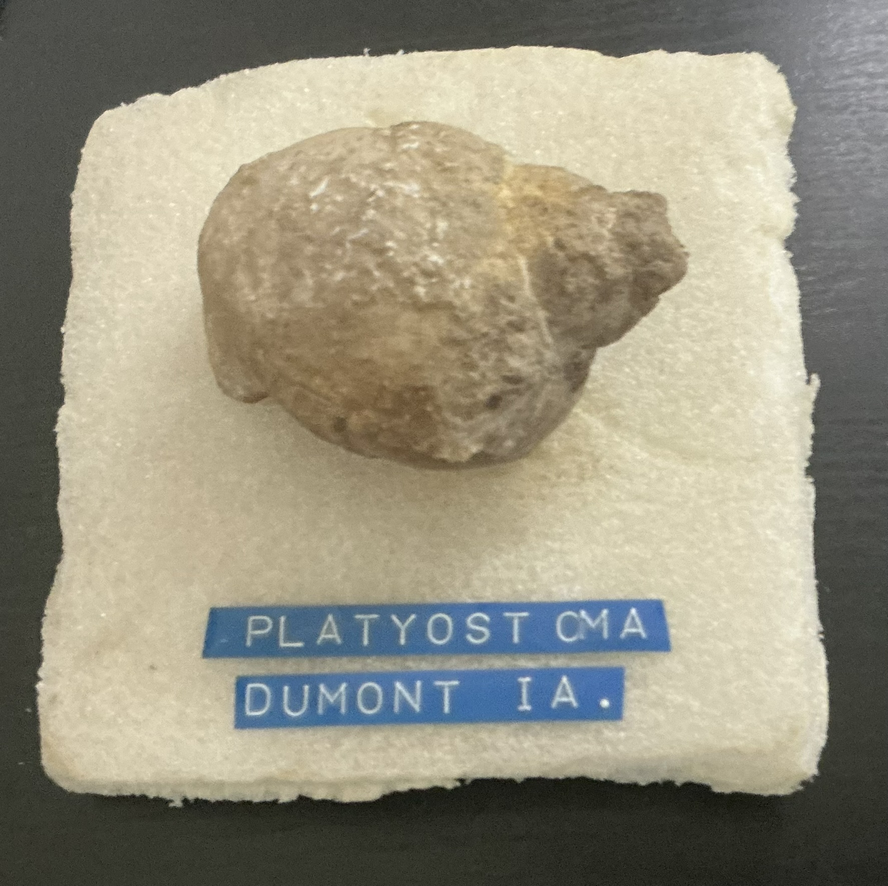

A family collection preserved
Legacy in Stone
A digital museum for minerals, geodes, agates, fossils, and the history of the Jane Freese Collection.
Explore
Enter the Collection
A first look
Featured specimens
A closer look
Special Galleries
Explore the collection
Special Galleries
A few favorite specimens and interesting connections.
Special Gallery
Collection browser
Browse specimens
Search by name, number, locality, mineral or fossil group, provenance, age, or notes.
About the Collection
A collection carried forward
Preserving Jane Freese’s collecting history, family records, and the specimens that remain part of her legacy.
Jane Freese
A Lifelong Interest
Jane Freese was my grandmother who instilled my love of geology. As a child, I remember her collection of fossils and minerals being stored in two antique wooden cabinets in the living room of their house. She collected the specimens herself and worked to identify them based on the limited resources available to her. The individual specimens were usually adhered to a small section of styrofoam and labeled with an embossed Dymo label and frequently a small typewritten paper label to preserve names and collecting localities. Some of those paper labels are included as photos in Legacy in Stone as original labels. What I know now, is that she did a remarkably good job of identifying specimens given the resources available to an amateur collector at the time. Commonly, where names have been changed, it is due to refinement using resources not available to her at the time and not correcting poor identification.
As the linked article notes, she discovered her passion for fossils following a delivery of limestone to the family farm. After retiring from farming, she and my grandfather took up traveling in their Airstream trailer and continued to “rockhound” and expand the mineral and fossil collection.
My grandparents had a full lapidary room and would cut and polish stones for jewelry. My grandfather took up silversmithing and created pieces of jewelry using the cut stones for family and friends.
When I earned my degree in geology, my grandmother wanted me to have her collections. She gave me her collection of fossils and minerals, along with her notes and mineral guide, before she passed away in 2009.
The Jane Freese Collection preserves a representative American rockhound collection assembled during a particularly active period of American amateur rock and fossil collecting in the 1960s and early 1970s. A charter member of Iowa’s Black Hawk Gem & Mineral Society, Jane was part of an organized network of amateur collectors. Alongside fossils and minerals collected near her Iowa home, Jane acquired specimens from classic collecting localities throughout North America through field collecting, rock swaps, mail exchanges, and commercial dealers. Some of those localities are now closed, protected, depleted, or otherwise inaccessible, giving the collection value not only for its specimens and the provenance preserved with them, but also as a record of an earlier era of amateur geology and paleontology.
Newspaper article Grandma Limestone Hobby Open PDF
Collection History
Notes from the collection
Inherited specimens are identified throughout the application as the Jane Freese Collection . Her broader notes are preserved here as collection-wide history.
Collection history Grandma Rock Notes Open PDFOriginal Displays
Preserving Jane's Methods

Many specimens in the Jane Freese Collection were mounted on hand-cut pieces of Styrofoam with embossed labels identifying the specimen and locality. These original mounts and labels have been preserved whenever practical because they provide an insight into how she organized and documented her collection.
Collection History
Jane Freese’s Mineral Guide
This well-used mineral guide was part of the collection my grandmother passed down with her notes, minerals, and fossils. Its worn cover and repaired binding reflect many years of use.
Articles connected to specimens
Research and reference articles are now linked directly to the relevant specimen records. Open a specimen and look under Related materials .
19
articles and research documents linked to 17 specimen records
Collection overview
Statistics
A snapshot of the catalog and photography progress.